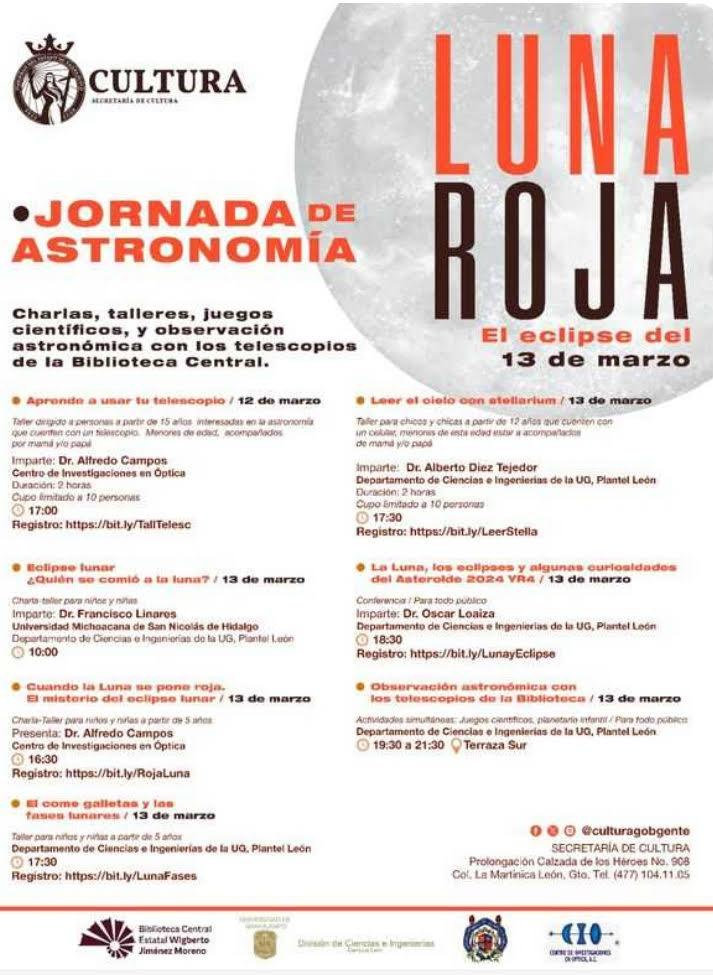

Jornada realizada · Marzo 2025
Jornada de Astronomía
Charlas, talleres, juegos científicos y observación astronómica con los telescopios de la Biblioteca Central, alrededor del eclipse total de Luna.

Taller dirigido a personas a partir de 15 años interesadas en la astronomía que cuenten con un telescopio. Menores de edad, acompañados por mamá y/o papá.
Imparte: Dr. Alfredo Campos
Centro de Investigaciones en Óptica
Charla-taller para niños y niñas.
Imparte: Dr. Francisco Linares
Universidad Michoacana de San Nicolás de Hidalgo · División de Ciencias e Ingenierías de la UG, Plantel León
Charla-taller para niños y niñas a partir de 5 años.
Presenta: Dr. Alfredo Campos
Centro de Investigaciones en Óptica
Taller para niños y niñas a partir de 5 años.
División de Ciencias e Ingenierías de la UG, Plantel León
Taller para chicos y chicas a partir de 12 años que cuenten con un celular. Menores de esta edad, acompañados de mamá y/o papá.
Imparte: Dr. Alberto Diez Tejedor
División de Ciencias e Ingenierías de la UG, Plantel León
Conferencia para todo público.
Imparte: Dr. Oscar Loaiza
División de Ciencias e Ingenierías de la UG, Plantel León
Actividades simultáneas: juegos científicos y planetario infantil. Para todo público.
División de Ciencias e Ingenierías de la UG, Plantel León
Terraza Sur
Organizaron la Secretaría de Cultura de Guanajuato, la Biblioteca Central Estatal Wigberto Jiménez Moreno, la División de Ciencias e Ingenierías de la UG y el Centro de Investigaciones en Óptica.